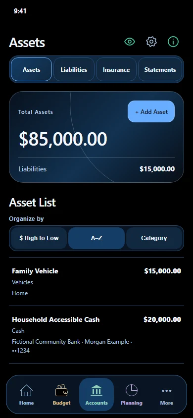

Financial Overview
Net Worth and Cash Flow
See net worth and cash flow alongside the records behind them. Review changes over time with Snapshot History.
- Budget & Cash Flow Review income, expenses, savings allocations, and scheduled income.
- Assets & Liabilities Organize what you own and owe. Recorded debt payments can feed cash flow and debt tools.
- Insurance & Estate Organization Keep policy references, ownership, and beneficiary information alongside your financial records.

